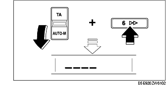
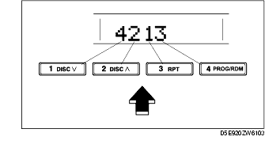
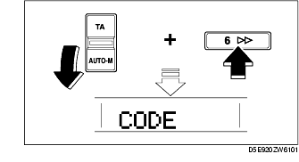

Workshop Manual ➭ BODY & ACCESSORIES ➭ ENTERTAINMENT ➭ ANTI-THEFT SYSTEM
ANTI-THEFT SYSTEM
id092000804400
{: #wp1059778}
Alarm Conditions
• If the anti-theft system protection has been activated, any one of the following conditions will trigger the system:
- Disconnected battery cable {: #wp1059803}- Discharged battery {: #wp1059817}- Disconnected audio unit connectors
• If the system is triggered, the audio unit will then be inoperative when it is reconnected to a power source, and "code" will flash on the display until the preselected code number is input. If the anti-theft system is triggered, follow the procedures in "Canceling Anti-theft Operation" to reset the unit.
|
Reference {: #wp1059866} |
|
|---|---|
|
Input code number to activate anti-theft system {: #wp1059939} |
Setting the Code Number {: #wp1059942} |
|
Delete previous code number and set new number {: #wp1059946} |
Canceling the Code Number {: #wp1059949} |
|
Resume audio unit operation after anti-theft system is triggered {: #wp1059992} |
Canceling Anti-theft Operation {: #wp1059995} |
Setting the Code Number
Complete each step (Steps 1-3) within 10 s or the setting procedure will be canceled.
-
Turn the ignition switch to ACC position and then turn off the audio unit.
-
First press down the TA/AUTO-M switch, then simultaneously press preset button 6 for approximately 2 s until "CODE" appears on the display.{: #wp1060050}

- Press down the TA/AUTO-M switch again, then simultaneously press preset button 6 until bars appear on the display.{: #wp1060095}

-
Select a personal code number and record it before inputting it. If the number is input and then forgotten, it cannot be canceled, and if the unit is disconnected again, the audio unit will be inoperative.
-
Use preset buttons 1-4 to input the selected code number. Press button 1 for the first digit, 2 for the second, 3 for the third, and 4 for the last digit. Input the number within 10 s. If the display is deleted, repeat the procedure from Step 1.{: #wp1060135}

*Note*{: #wp1060173}
• Perform Step 6 within 10 s after Step 5.
- With the code number displayed, press down the TA/AUTO-M switch, then simultaneously press preset button 6 for approximately 2 s. "CODE" will be displayed for approximately 5 s. After it disappears, the code number is set.{: #wp1060227}

- If "Err" (error) appears on the display, repeat the procedure from Step 1. If input error is repeated three times, turn the ignition switch to LOCK position and repeat the procedure from Step 1.
Canceling the Code Number
Complete each step (Steps 1-3) within 10 s or the canceling procedure will be canceled.
-
Turn the ignition switch to ACC position and then turn off the audio unit.
-
First press down the TA/AUTO-M switch, then simultaneously press preset button 6 for approximately 2 s until "CODE" appears on the display.{: #wp1060304}

- Press the TA/AUTO-M switch again, then simultaneously press preset button 6 until bars appear on the display.{: #wp1060347}

- Use preset buttons 1-4 to input the current code number. Press button 1 for the first digit, 2 for the second, 3 for the third, and 4 for the last digit. Input the number within 10 s. If the display is deleted, repeat the procedure from Step 1.{: #wp1060377}
*Note*{: #wp1060415}
• Perform Step 5 within 10 s after Step 4.
- With the code number displayed, press down the TA/AUTO-M switch, then simultaneously press preset button 6 for approximately 2 s. "CODE" will be displayed for approximately 5 s. After it disappears, the code number is canceled.{: #wp1060469}

- If "Err" (error) appears on the display, repeat the procedure from Step 4.
Canceling Anti-theft Operation
Properly input the selected code number to deactivate the anti-theft system and resume normal audio operation.
-
Turn the ignition switch to ACC position. ("CODE" will flash on the display.)
-
First press down the TA/AUTO-M switch, then simultaneously press preset button 6 for approximately 2 s until bars appears on the display.{: #wp1060541}
*Note*{: #wp1060590}
• Perform Step 3 within 10 s after Step 2.
- Use preset buttons 1-4 to input the selected code number. Press button 1 for the first digit, 2 for the second, 3 for the third, and 4 for the last digit. Input the number within 10 s. If the display is deleted, repeat the procedure from Step 1.{: #wp1060617}

Caution
• Three consecutive errors, including turning the ignition switch to LOCK position and disconnecting the audio unit, will activate the anti-theft system and render the audio unit completely inoperative.
- With the code number displayed, press down the TA/AUTO-M switch, then simultaneously press preset button 6 for approximately 2 s. "CODE" will flash for approximately 5 s.{: #wp1060711}
- If "Err" (error) appears on the display, repeat the procedure from Step 1.